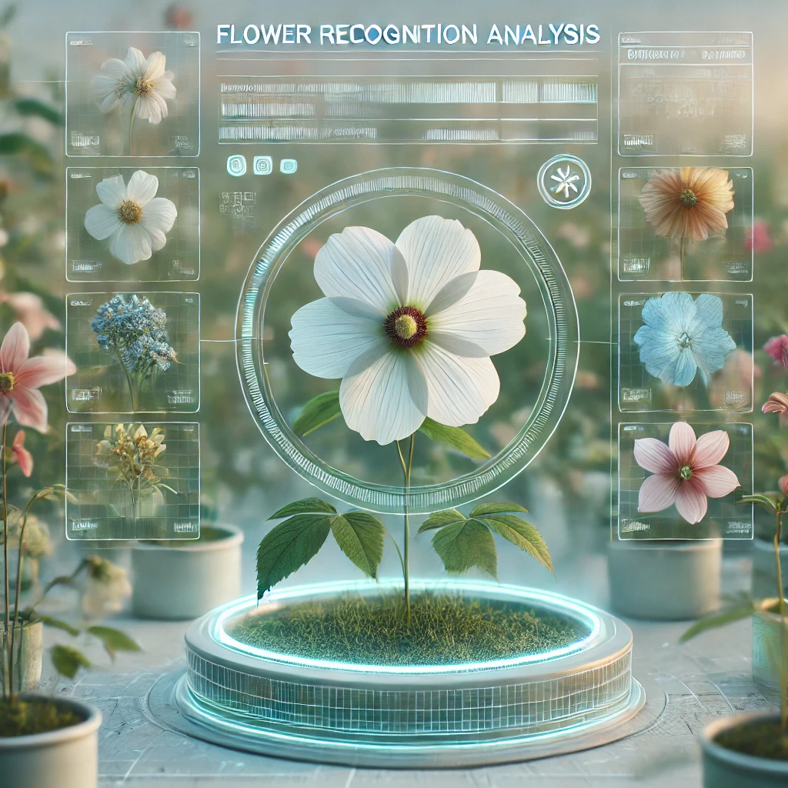

A list of my top Deep Learning projects, in the form of
Jupyter Notebook using Python.
Project notebooks are fully open-sourced on GitHub. You can click
on the picture to view the full project on GITHUB and KAGGLE.
TEXT EXTRACTION (OCR)
Deep Learning Models
Python | 2024
This project uses OCR to automatically read and display text from drug labels, providing quick and accurate access to essential information.
Explore the full project on:
Github: Analysis & Report Kaggle: Project Notebook
SIGN LANGUAGE DETECTION
Object Detection Model
Ultralytics YOLO11 | 2024
This project uses the YOLO11 model to detect and classify American Sign Language (ASL) gestures in real-time, enabling efficient communication for the deaf community.
Explore the full project on:
Github: Analysis & Report Kaggle: Project Notebook

FLOWER RECOGNITION